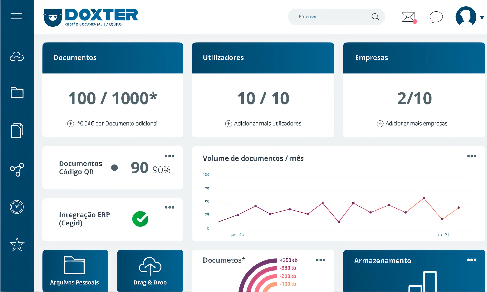

Como funciona o DOXTER?
O documento entra por upload ou por e-mail, o DOXTER lê o QR Code, valida os dados na Autoridade Tributária e arquiva na categoria certa. Tudo fica disponível no portal e, se usar Primavera ou Cegid, dentro do ERP.

Como entram os documentos?
De quatro formas, para que nenhum fique numa secretária à espera de ser digitalizado.
Upload
Carregue o ficheiro na plataforma. Além de PDF, o DOXTER aceita JPG, PNG e TIFF (em beta) e converte-os para PDF durante o upload.
Email Watcher
Os documentos digitais entram sozinhos a partir do e-mail. O DOXTER preenche metadados como o Centro de Custo ou o Vendedor de acordo com o remetente.
E-mail genérico
Um endereço de recolha recebe os documentos que os fornecedores enviam, sem passar pela caixa de ninguém.
O que acontece na Inbox?
O DOXTER lê o QR Code de cada documento e trata dos casos que costumam obrigar a trabalho manual.
Leitura do QR Code
Os dados fiscais são lidos do QR Code. Quando o código tem erros de estrutura, o DOXTER identifica e corrige as falhas mais comuns.
Vários QR Codes
Um ficheiro com vários documentos, como os da Via Verde ou uma digitalização em lote, é separado, e a relação entre os documentos fica visível.
Processar mais tarde
Pode carregar um documento sem processar logo o QR Code e decidir o momento certo para o fazer.
Como é validado cada documento?
Contra a Autoridade Tributária, de forma permanente e automática, mesmo que a empresa não tenha software de gestão.
Validação na AT
Os dados do documento são cruzados com os da Autoridade Tributária. As diferenças aparecem como pendentes.
Pagamentos e compras
Os pagamentos são validados e as compras registadas com o documento associado, através da ligação ao ERP.
Validade legal
O arquivo digital tem validade legal ao abrigo do Decreto-Lei n.º 28/2019.
Porquê escolher o DOXTER?
Comparação com outras soluções no mercado.
| Características | DOXTER | Outras soluções |
|---|---|---|
| Cruzamento de dados com a AT sem software de gestão | Sim | Não |
| Gerir documentos além de faturas | Sim | Não |
| Toda a informação num só ecrã | Sim | Não |
| Documento sempre visível, em qualquer separador do software de gestão | Sim | Não |
| Associação de faturas a pagamentos | Sim | Não |
| Memória no lançamento de compras a fornecedores recorrentes | Sim | Não |
| Validade legal (DL 28/2019) | Sim |
Ainda tem dúvidas? Agende a sua demonstração.
- Diga que ERP usaPrimavera, Cegid, outro ou nenhum. O DOXTER funciona nos quatro casos.
- Deixe o seu contactoNome, empresa e e‑mail chegam.
- Recebe uma proposta de dataRespondemos por e‑mail para marcar a demonstração.